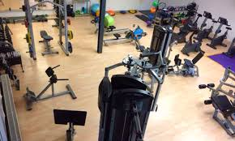
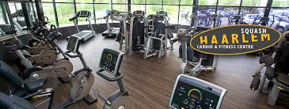
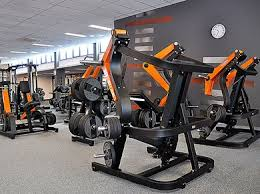
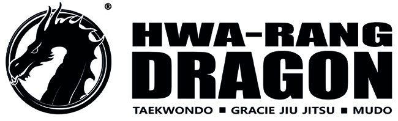
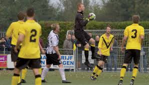
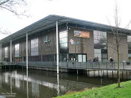
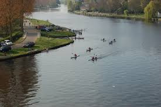
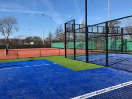

SPORTEN IN HAARLEM-NOORD EN OMGEVING Haarlem-Noord beschikt over een groot aanbod van sportverenigingen en sportclubs. Voor elk wat wils! CARDIO FITNESS NOORD  Cardio fitness noord is een gezellige buurtsportschool en de goedkoopste van Nederland. Zij bieden inmiddels 111 groepslessen, personal training en fitness op de nieuwste apparatuur aan door gecertificeerde instructeurs op twee locaties. Voor meer informatie: klik hier SPORTCENTRUM WU DAE Sportcentrum Wu Dae is de leukste sportschool in Haarlem voor Pilates, Tai chi, Zumba, Wing Chun Kung Fu, Kettlebell en Yoga. Zij bieden elke week meer dan 30 groepslessen aan. Voor meer informatie: klik hier SQUASH HAARLEM  Squash Haarlem biedt squash, fitness en groepslessen pilates, bootcamp of yoga. Het is echter ook mogelijk om een losse squashbaan te huren. Voor meer informatie: klik hier BASIC FIT HAARLEM-NOORD  Basic Fit Haarlem-Noord biedt een perfecte workout, zowel voor de beginner als de gevorderde sporter en voor elke leeftijd. Sport in jouw eigen tempo of kies voor een groepsles. Voor meer informatie: klik hier HWA-RANG DRAGON  Hwa-Rang Dragon is al twintig jaar de meest toonaangevende martial art school van Haarlem & omstreken! Taekwondo lessen voor kinderen vanaf 7 jaar en Brazilian jiu jitsu voor de jeugd vanaf 14 jaar. Voor meer informatie: klik hier VV SCHOTEN  VV Schoten is een voetbalvereniging in Haarlem- Noord. De club werd opgericht in 1910 en is de gezelligste voetbalvereniging van Haarlem. Voor meer informatie: klik hier ZWEMVERENIGING DE WATERTRAPPERS  Zwemvereniging de Watertrappers is een echte familievereniging, waarbij prestatie samengaat met plezier. Naast wedstrijdzwemmen bieden zij ook waterpolo en synchroonzwemmen aan. Voor meer informatie: klik hier HAARLEMSE KANO VERENIGING  Haarlemse Kano Verenigin ligt aan een prachtig plekje aan het Spaarne en vandaar peddelt u zo de stad in, maar ook richting de Ringvaart en gemaal het Cruquius. Bij HKV kunnen zowel vlakwater-toervaarders, zeevaarders als SUP'ers terecht. Voor meer informatie: klik hier TENNISPARK PIM MULIER  Tennispark Pim Mulier organiseert tennislessen voor de jeugd en voor volwassenen. Het is ook mogelijk om een losse baan te huren of deel te nemen aan de eigen competities. Voor meer informatie: klik hier